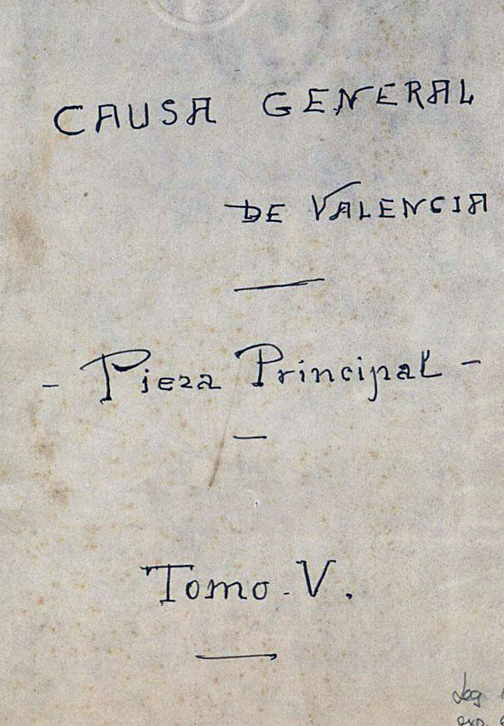
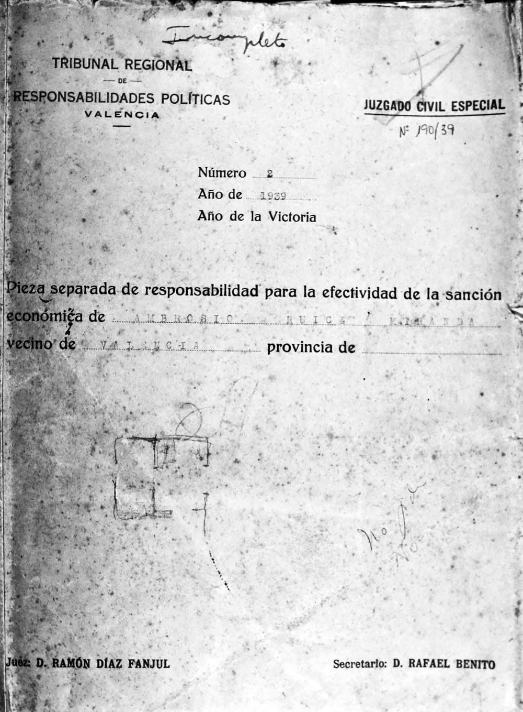

Introducción
El presente artículo es una parte del estudio realizado sobre las actuaciones del Tribunal de Responsabilidades Políticas del distrito judicial de Carlet (Valencia), basado en el análisis de las sentencias conservadas del mismo en el Archivo del Reino de Valencia. En él se analiza su génesis y desarrollo, paralelo a la elaboración de la Causa General, mediante el estudio de casos concretos, que permiten observar los intereses a que respondieron sus actuaciones dentro de la consolidación del estado franquista.
La Causa General
La represión franquista se asienta sobre las bases de una ideología que no responde a una única causa o concepción, sino que por el contario son varias, fundamentadas en los distintos intereses del conglomerado de fuerzas que le prestaban su apoyo, tales como falangistas, carlistas, católicos, monárquicos de derechas, militares conservadores y en general, los viejos poderes que habían dominado el país durante la Restauración. Y de ese conglomerado surge el distinto interés en la represión de unos u otros grupos al que se consideraban enemigos, en función de cada una de esas ideologías, aunque con unos intereses comunes basados en la unidad del país, el nacional-catolicismo, la destacada influencia del estamento militar, la persecución de la masonería y el comunismo, y en general de la República y los sistemas democráticos. Por ello la represión, lo fue de clase, pues se ejerció mayoritariamente sobre la clase obrera y campesina; fue “terapéutica”, pues pretendió extirpar de raíz lo que consideraban “los males de la patria”, incompatibles con la nueva España que se pretendía construir; tuvo un componente de venganza, en el que las clases conservadoras se cobraron todo el miedo pasado y purificaron todas aquellas manifestaciones que habían supuesto un desafío a su poder; sirvió para consolidar la retaguardia; tuvo un carácter ejemplarizante ; y sobretodo pretendió - y consiguió – la paralización de la población a través del miedo y el terror .

En 1940 Franco instaba al ministro de Justicia, Esteban Bilbao y Eguía , a proceder a instruir una causa que recogiese los delitos acaecidos durante el llamado periodo rojo. Si durante el periodo de guerra la represión se había fundamentado en los bandos de guerra y en los consejos de guerra sumarísimos, ahora se daba un paso más tratando de darle carácter legal, a la búsqueda de que el proceso tuviese la apariencia de un procedimiento jurídico con garantías.
La tarea le fue encomendada a la Fiscalía General del Estado - siendo el fiscal del Tribunal Supremo Blas Pérez González - mediante la publicación del decreto de 26 de abril de 1940, que regulaba dicho procedimiento a través de la incoación de “los hechos delictivos cometidos en todo el territorio nacional durante la dominación roja” . En realidad venía a completar la tarea desarrollada por la Causa General Militar desde 1936, y cuyos resultados serían incorporados a la que se ponía en marcha a raíz del decreto. Los delitos a juzgar tenían carácter retroactivo, abarcando todo el periodo de la 2ª República, con especial énfasis a los hechos acaecidos en 1934.
La Causa General fue realizada a modo de un sumario judicial, que se dividió en once piezas que recogían 1953 legajos - archivados en la actualidad en unas 4000 cajas -. Para dicha incoación, cada una de las provincias del territorio nacional hubo de elevar un sumario provincial, que contenía la información solicitada. Ésta trascendía las actuaciones o actividades que los individuos hubiesen podido cometer, para detallar cual era su ideología, militancia y si guardaban algún tipo de relación con alguna institución del periodo republicano, así como del funcionamiento y composición de estas últimas. La información se obtenía de diversos organismos (Alcaldía, Juzgados municipales, Guardia Civil, Iglesia, Falange) y a través de afectados y fundamentalmente de testigos, que por ejemplo en el caso del presente estudio se basó en muchos casos en testimonios de viudas de asesinados durante el periodo de guerra, que eran presionadas para declarar .
Además de recopilar información sobre la violencia ejercida en el territorio controlado por la república, tuvo otras finalidades , como la propagandística de cara a la opinión pública internacional tratando de justificar su propia violencia, no dudando en magnificar las cifras; el derecho de las familias afectadas a recibir pensiones, generadoras de fidelidades al régimen; y por supuesto facilitar el ejercicio de la represión. No obstante, no figurar en la CG no eximía de nada, pues aparecen nombres de ejecutados que no consta en la misma que participasen o cometiesen delito alguno, por lo que de ella se extrajo sólo una parte de los nombres de las personas a juzgar o a ejecutar.
La CG es una fuente que debe ser tomada con cautela, tal y como plantea Paloma Seoane: “Evidentemente, la Causa General de Madrid no es una fuente de datos objetiva, por las razones que motivaron su gestación y desarrollo, por su fuerte carácter propagandístico de cara al exterior, por la complejidad que introducen los testimonios y por su intencionalidad exculpatoria y sus usos sesgados .”
Al final de la investigación el general Franco quedó decepcionado con los resultados de la misma, pues el número final de asesinados fue de 85.940. Y eso que en la CG se habían incrementado las cifras empleando para ello toda clase de triquiñuelas, tales como sumar la misma persona varias veces - según su lugar de nacimiento, residencia y muerte -, o sumar los muertos caídos en combate durante los primeros del golpe militar. Así pues las estimaciones más reales reducen la cifra entorno a 40.000 personas.
De las 11 piezas de que constaba la CG , en el partido judicial de Carlet solo fueron instruidas las tres primeras - denominadas Estados – pues las ocho restantes carecían de sentido en localidades de pequeño tamaño, correspondiendo el
- Estado Número 1 a Relación de personas residentes en este término municipal, que durante la dominación roja fueron muertas violentamente o desaparecieron y se cree fueron asesinadas.
- Estado Número 2 a Relación de cadáveres recogidos en este término municipal, de personas no reconocidas como residentes en él, que sufrieron muerte violenta durante la dominación roja.
- Estado Número 3 a Relación de tormentos, torturas, incendios de edificios, saqueos, destrucciones de iglesias y objetos de culto, profanaciones y otros hechos delictivos que por sus circunstancias, por la alarma o el terror que produjeron deben considerarse como graves, con exclusión de los asesinatos, que fueron cometidos en este término durante la dominación roja.
En el caso concreto de la zona objeto del presente estudio, el análisis de los datos recogidos en la Causa General confirman los elementos anteriormente apuntados.
En primer lugar gran parte de los hechos recogidos son vagos e inconsistentes, y se caracterizan de una forma un tanto general. En muchos casos no concretan sobre quién se han cometido, ni los autores de los supuestos hechos.
Igualmente confirman que casi todos los asesinatos se dan en los primeros meses de la guerra, lo que concuerda con la tesis de que la represión en la zona republicana fue coincidente con el derrumbamiento del poder central, y que tras la reorganización del mismo, tendieron a reducirse hasta ser muy minoritarios. En todos los casos, tanto las muertes como los daños a bienes particulares y especialmente eclesiásticos, se produjeron en el año 1936, concentrándose en los meses de julio y agosto, produciéndose unos pocos casos en 1937. Además por su número, y por las características sociales e ideológicas de los mismos, se comprueba que no fue una represión sistemática sino esporádica, y que en muchos casos sirvieron para ajustar cuentas.
Las cifras para todo el partido judicial de acuerdo a la CG reflejan un total de 96 fallecidos, de los cuales 27 aparecen consignadas también en sus localidades de residencia, distintas de las de su muerte, por lo que una parte de los muertos han sido contabilizados en el partido judicial en el que fueron hallados sus cadáveres en el Estado 2 y en sus localidades de origen en el Estado número 1, por lo que el número total de víctimas de la “violencia roja” descontando los 27 nombres que aparecen duplicados y contabilizados dos veces, asciende a 69 personas. Por contra el número de ejecutados posteriormente por la represión franquista es de 114 personas , la mayor parte condenados en consejo de guerra, lo que supone casi el doble de los asesinatos cometidos durante la guerra.
Las cifras tanto de ejecutados como de participantes se halla en proporción directa con el número de habitantes de las localidades, siendo las cifras mayores cuanto mayor es la localidad. No obstante, en casi todas ellas no aparece dato alguno o únicamente en uno de los tres estados, por no haberse producido hechos represivos en las mismas, siendo como se acaba de indicar en las localidades con mayor población donde se hallan recogidos datos de los tres estados.
Respecto de otro de los motivos de controversia historiográfica, la de la salvaje persecución religiosa durante la guerra, los datos de la zona muestran que al menos ahí no se dio tal persecución, pues la CG solamente documenta 13 ejecuciones de miembros de la Iglesia.
En relación al sexo, no figura el nombre de ninguna mujer como participante activa en las detenciones y asesinatos, pero en cambio sí se da una participación en algunas localidades en la quema y destrucción de iglesias e imaginería, así como en los asaltos a edificios públicos y privados. Igualmente el número de mujeres asesinadas es bajo respecto del total, figurando un total de 11 mujeres ejecutadas - 1 en Alginet, 2 en Alfarp, 5 en Alcudia y otras 3 en Carlet -, no siendo todas ellas vecinas de los municipios; tratándose de cuatro religiosas, dos amas de casa - figuran como “sus labores” - y cinco mujeres de profesión desconocida.
A excepción de dos localidades - Carlet y Monserrat, donde se produjeron 6 y 1 asesinados respectivamente, dentro de la propia localidad - el resto de los 69 asesinatos, es decir 67, no se produjeron en el mismo pueblo. En la mayor parte de los casos, los ejecutados eran detenidos - en unas ocasiones por los propios vecinos y en otras por grupos armados que provenían de fuera -. Los lugares de ejecución solían estar alejados, habitualmente zonas de campo, aunque también al lado de cementerios y carreteras, por lo que no era raro la aparición de cadáveres en términos municipales distintos de la localidad de procedencia (Estado 2), la mayor parte localidades cercanas o limítrofes. Esto concuerda con los conocidos “paseos”, con los que se trataba o bien de dificultar la identificación de los autores del hecho, o bien tratar de evitar el triste espectáculo a los vecinos. En otros casos eran enviados fuera de la localidad, habitualmente a cárceles de Valencia capital, dónde algunos, tras ser juzgados, eran ejecutados.
Se da la circunstancia - como ya se ha explicado anteriormente - de que un mismo fallecido, se encuentra recogido al menos dos veces en los listados de la CG, pues su localidad de origen lo registraba en el Estado nº 1 como persona del pueblo - aunque no hubiese sido ejecutado en el pueblo - cuyo cadáver había aparecido en otro término municipal, mientras que la segunda localidad lo recogía en el Estado nº 2 como persona no residente en el término, pero cuyo cadáver había sido recogido en el mismo. Así por ejemplo encontramos a Juan Bautista Viadel Lázaro, vecino de Catadau, inscrito a la vez en Catadau y en Llombay; o a Juan Bañuls Rubio, vecino de Montserrat, inscrito a la vez en Montserrat y en Real de Montroy, en el primero de los casos como vecinos de la localidad fallecidos en otro término municipal, y en el segundo de los casos como vecinos no residentes en la localidad pero cuyo cadáver ha aparecido en el mismo. De ello se pude inferir que el número de fallecidos recogidos en la CG es menor, ya que en el cómputo total fueron sumadas las cifras conjuntas remitidas por cada localidad, sin distinción de que un mismo nombre apareciese en los listados remitidos por cada una de ellas.
Igualmente se da el caso contrario: aparecen datos que son consignados en unos listados pero no quedan reflejados en otros; así por ejemplo Sor Trinidad Martinez, Doroteo Madramani Serrano, Julio Bou Carbonell y Alvaro Comenge Chornet, vecinos de Alcudia de Carlet aparecen en el Estado 1 como ejecutados en Benifayó, mientras que el expediente de Benifayó en su Estado nº 2, no refleja dichas muertes.
También otros como los de José Peris Vanaclocha o Bernardo Bello Ferrer vecinos de Carlet, asesinados en el término de la vecina Alcudia de Carlet, registrando como desconocidos los ejecutores en el estadillo nº 2 de Alcudia, mientras que figuran los nombres de los 4 supuestos ejecutores en el nº 1 de Carlet.
Hay casos como el de José Mendez, vecino de Carlet, que no figura en los expedientes de RRPP, pero si en la CG, donde aparece como ejecutado, por lo que es posible deducir la existencia de personas ejecutadas que no fueron juzgadas en los tribunales; aunque bajo el genérico adjetivo de ejecutado puede haber sido por miembros del ejército, la Falange o alguna otra persona, pues no se concreta el autor material.
Resulta cuanto menos paradójica la exactitud del apartado “Personas sospechosas de participación en el crimen”, datos obtenidos de delaciones anónimas o no, y de interrogatorios, pues encontramos ejemplos de personas que han sido ejecutadas a 200 km del lugar de los hechos y sin embargo se identifica plenamente a sus ejecutores ( véase el caso de José Maria Ruiz Ferrando de la localidad de Catadau y ejecutado en El Toro, Castellón), lo que no deja de plantear dudas sombras sobre la autenticidad de algunos datos. También resulta chocante el hecho de que en unos casos no se haya podido aportar ningún nombre en actos donde se dió una amplia participación de la masa popular, como es el caso de la destrucción de templos - véase por ejemplo la localidad de Alginet -, siendo un hecho tan notorio; mientras que en otros - por ejemplo en Benimodo - se lleguen a citar con total exactitud hasta un total de 30 nombres.
La Ley de Responsabilidades Políticas de 9 de febrero de 1939
La LRRPP establecía en su introducción que “Próxima la total liberación de España, el Gobierno consciente de los deberes que le incumben con respecto a la reconstrucción espiritual y material de nuestra Patria, considera llegado el momento de dictar una ley de Responsabilidades Políticas que sirva para liquidar las culpas de este orden contraídas por quienes contribuyeron con actos u omisiones graves a forjar la subversión roja, a mantenerla viva durante más de dos años y a entorpecer el triunfo providencial e históricamente ineludible del Movimiento Nacional,…”. Así pues había una voluntad de expiación, de lo que el nuevo régimen consideraba culpas que debían ser castigadas.
Su objetivo primario era dar valor de legalidad a unos actos que nacían de una ilegalidad, el derrocamiento de un legítimo gobierno democrático. Pero bajo ese aspecto se escondía una doble voluntad: censar a todos los elementos considerados desafectos al régimen por un lado, y la de obtener un botín de guerra por otro. Y ello era así porque en la “Nueva España” no tenían cabida esos elementos que eran causa de todos los males del país y debían ser en consecuencia erradicados, contribuyendo además con sus bienes a la financiación del nuevo estado que nacía. En palabras de Julio Prada se produjo una “juridificación del terror”.
Así se produjo una clara instrumentalización de la Justicia, la cual fue utilizada no como garantía del cumplimiento de derechos y obligaciones, sino como un arma política que sirviera para consolidar el nuevo régimen. Fue esta una “justicia al revés”, en primer lugar por su utilización espuria para fines radicalmente distintos para los que se concibe la ley, y en segundo lugar por juzgar - quienes se levantaron en armas contra la legalidad democráticamente establecida por “delito de adhesión a la rebelión” - a quiénes la defendieron. De acuerdo con el Código de Justicia Militar de 1880 se generalizó la aplicación de los artículos 237 a 241, y para quienes formaban parte del Ejército el 219, que contemplaba los delitos de “rebelión militar”, “auxilio a la rebelión” o “traición”.
La Ley constaba de 89 artículos y varias disposiciones transitorias, siendo todo un dechado de aberraciones desde un punto de vista jurídico. En primer lugar su aplicación tuvo carácter retroactivo, lo que choca con un principio básico de cualquier fundamento legal como es la irretroactividad de la ley y afectaba a “ las personas, tanto jurídicas como físicas, que desde el primero de octubre de 1934 y antes del 18 de julio de 1936, contribuyeron a crear o gravar la subversión de todo orden de que se hizo víctima a España, y de aquellas otras que, a partir de las segundas de dichas fechas, se hayan opuesto o se opongan al Movimiento con actos concretos o pasividad grande" . La aplicación de depuración de responsabilidades se llevó contra el considerado “enemigo interior” con un celo extremo.
Otra flagrante barbaridad jurídica es el hecho de que nadie puede ser juzgado dos veces por el mismo delito, posibilidad que sí contemplaba la ley al establecer que podían volver a ser juzgados nuevamente “por la jurisdicción militar por alguno de los delitos de rebelión (…)”, como así ocurrió.
En realidad fue más allá, pues cualquiera que se hubiese significado de algún modo con la República acabó siendo juzgado, estuviese o no afectado por los supuestos contemplados en la ley. La ley ayudó a sustentar la idea de la “República culpable”, creando la falsa idea de que a causa su mal funcionamiento no había quedado otra opción que la del restablecimiento del orden a través del golpe, siendo por tanto la responsable del conflicto.
Finalmente sería reformada el 19 de febrero de 1942 , desapareciendo los Tribunales Regionales cuyas funciones serán asumidas por las Audiencias Provinciales, y cuya jurisdicción fue finalmente suprimida por el Decreto de 13 de abril de 1945, a través de una Comisión liquidadora.
Los Tribunales de Responsabilidades Políticas
Niveles de actuación, funciones y composición.
El antecedente directo de los Tribunales de Responsabilidades Políticas son las Comisiones de Incautación de Bienes puestas en marcha por el bando rebelde durante la guerra. El Título I de la Ley , denominada parte sustantiva, contenía una justificación de los motivos de creación de la Ley, así como las sanciones aplicables y su procedimiento de ejecución. En el Título II, se establecía la estructura judicial de tribunales, instancias y juzgados. En la actuación de los Tribunales de Responsabilidades Políticas se pueden distinguir tres niveles principales, existiendo un Tribunal Nacional ; un Tribunal Regional para cada una de las 18 provincias que tenían Audiencia Territorial, además de otros tres en Ceuta, Melilla y Bilbao; y un Tribunal Provincial - con un total de 61 Juzgados provinciales para el conjunto del Estado español -, más un Juzgado Civil especial para cada uno de los Tribunales regionales. Complementariamente actuaban Juzgados ejecutorios, los Juzgados de Instrucción locales y los Juzgados Militares.
Sus funciones - recogidas en el artículo 26 de la citada Ley - establecían para el Tribunal Nacional la revisión de las apelaciones en última instancia, así como de dirimir los problemas de competencias entre las distintas instancias; los Tribunales Regionales eran los encargados de la tramitación, celebración de los juicios y resolución de los expedientes; los Provinciales instruían la causa e inventariaban los bienes, y por último el Civil especial ejecutaba las sentencias. La mayor parte del trabajo correspondía a los Tribunales Provinciales los cuales estaban obligados a la rápida tramitación de los expedientes, y a guardar un celo extremo.
Los tribunales de esta jurisdicción especial se nutrían de miembros del Ejército, el sistema judicial, y FET y de las JONS . La composición de los Tribunales disponía: para el Tribunal Nacional un presidente, dos generales o asimilados, dos consejeros de FET y de las JONS, y dos magistrados con categoría no inferior a magistrado de Audiencia Territorial, siendo tres de ellos propietarios y tres suplentes, y designados libremente por el Gobierno; los Tribunales regionales se componían de un presidente - siempre un cargo del ejército -; dos vocales - uno debía ser funcionario de la carrera judicial y el otro un militante de FET y de las JONS que fuese abogado -; un secretario judicial; y suplentes para cada uno de ellos; los Juzgados Instructores Provinciales nombrados por la Vicepresidencia del Gobierno, por oficiales del Cuerpo Jurídico Militar o al menos con título de abogado; y el Juzgado Civil especial, por un juez de 1ª Instancia o magistrado de la carrera judicial, nombrado también por la Vicepresidencia del Gobierno. El personal subalterno era propuesto por los Tribunales Regionales y nombrado por el Tribunal Nacional.
El procedimiento regulado en el Artículo 35 y siguientes, establecía que las actuaciones se iniciaban de resultas de una sentencia de la jurisdicción militar; por la denuncia escrita y firmada de alguna autoridad o persona particular - sistema que será potenciado por las nuevas autoridades - ; o por propia iniciativa del Tribunal Regional de Responsabilidades Políticas o a propuesta de cualesquiera Autoridad Militar o Civil, Agente de Policía y Comandantes de Puesto de la Guardia Civil.
Las denuncias debían contener el nombre, apellidos, edad, estado, y profesión del denunciado; su último domicilio; el lugar en que se encontraba en el momento de formularse la denuncia; la relación de sus bienes y ubicación de los mismos; su valor aproximado; los hechos imputados con indicación de las pruebas que pudieran acreditarlos, y finalmente, si ya había sido encausado o no.
Los fiscales así como los defensores eran en muchos casos legos en materia jurídica, pues al no contar con suficientes miembros el Cuerpo Jurídico Militar, podían actuar “en su defecto, un jefe u oficial del Ejército”, ejerciendo ese papel al formar parte del estamento militar. El defensor era nombrado por el tribunal, y no conocía a su defendido hasta unas pocas horas antes del juicio. Si durante la incoación del procedimiento el juez hallaba el más mínimo indicio de delito, automáticamente eran embargados los bienes del acusado. Todo ello conllevaba inseguridad jurídica para el acusado y nulas posibilidades de defensa durante todo el procedimiento, que en algunos casos podía no alargarse más allá de unos días.
Los delitos a juzgar no se limitaban simplemente a la oposición al Glorioso Alzamiento Nacional o a los hechos acaecidos durante la guerra, sino que podían tener carácter retroactivo tomando como fecha de inicio el 1 de octubre de 1934 , sancionando de paso las actuaciones de la revolución del 34, dando igual si se tenían “delitos de sangre” o se había participado en lucha armada, cualquiera que hubiese mostrado apoyo al bando republicano era susceptible de ser castigado.
Las penas a las que podían condenar los Tribunales de Responsabilidades Políticas consistían básicamente en penas privativas de derechos, inhabilitaciones absolutas o especiales y sanciones económicas:
- la más grave, la condena a muerte;
- la privación de libertad, con un máximo de 30 años de reclusión mayor, aunque para casos muy graves se contemplaba la cadena perpetua ;
- la inhabilitación profesional - con especial atención en el caso de enseñantes y funcionarios públicos -;
- la privación de residencia, que iba desde el extrañamiento, al confinamiento e incluso el destierro;
- sanciones económicas, como el pago de multas - a las que debía hacer frente el condenado o su familia , caso de que éste hubiese sido ejecutado -, que incluían también en muchos casos la pérdida total de los bienes, o las incautaciones y confiscaciones de los mismos,
- y por último se contemplaba la posibilidad de la retirada de la nacionalidad española .
Toda condena llevaba aparejada una sanción económica, que podía ser de una cantidad fija, o bien ser establecida por el tribunal tras la recepción de informes sobre el patrimonio del encausado. El tribunal podía aplicar igualmente “accesorias legales correspondientes como autor de un delito de Adhesión a la Rebelión”, relativas a la residencia, inhabilitación e incautación de bienes. Igualmente la responsabilidad no acababa con la muerte, pues las responsabilidades políticas, y las pecuniarias a las que debía hacer frente la familia, eran imprescriptibles. Muchos de los expedientes en lo referente a las sanciones económicas irían siendo sobreseidos a lo largo de la década de los años 40, pero los bienes y el dinero incautado bien pueden ser considerados un “préstamo” que ayudó a la financiación del nuevo régimen, es decir, que el bando perdedor pagaba la construcción de la Nueva España.
Mucha multas eran incobrables, pero en aquellos casos en que se llegaron a ejecutar, los tribunales fueron implacables, pues si no se podía cobrar en metálico, el Estado embargaba cualquier bien que se poseyera que podía ser la casa o cualquier objeto material incluida la ropa, animales, aperos, utensilios de cocina, etc. Contar con un patrimonio superior a 25000 pesetas , condenaba a la pobreza a quienes permanecieron fieles del lado de la República. Provocar la ruina del adversario suponía más allá de la humillación moral, una forma de control social que era padecida por el condenado y su familia. Son frecuentes los testimonios en las sentencias que así lo reflejan: “su madre viuda tiene una propiedad oscilante en unas 3000 pesetas aproximadamente.” , “carece de bienes tanto él como sus familiares” .
Según el profesor Manuel Álvaro Dueñas las provincias donde se actuó con mayor fervor represor - Granada, Valencia, Madrid, Barcelona o Albacete - en 1941 apenas habían resuelto la cuarta parte de los asuntos iniciados.
Gran parte de la incapacidad de los tribunales para llevar a cabo su tarea derivaba del ingente volumen de expedientes - calculado en más de 225.000 - y en la falta de los recursos humanos necesarios para llevarla a cabo. Así en 1940 el Presidente del Tribunal Nacional de RRPP se dirigirá al Subsecretario de la Presidencia para informarle de la “angustiosa situación” de la Jefatura, debida a la “enorme desproporción existente entre el personal necesario para desempeñarlas (las tareas) debidamente y el asignado de hecho a ellas”, resultando “materialmente imposible despachar los asuntos pendientes” y “ejercer la acción investigadora e inspectora” que legalmente le correspondía . En los expedientes estudiados en la Caja 4253 se halla un escrito del Juez de Requena con fecha de 27 marzo 1943 dirigido al Juez de 1ª Instancia de Carlet en el que le informa de que: “Tengo el honor de poner en conocimiento de V.E. que en este Juzgado existen doscientos cuarenta y seis expedientes de responsabilidades políticas, de los cuales cuarenta se hallan en tramitación, sin que hasta la fecha se haya terminado ninguno ”
Por otra parte el bloqueo de millones de cuentas, que se realizaba mientras el expediente incoado estaba en marcha, provocaba un daño material tan evidente que no quedó más remedio que cerrar miles de expedientes incoados para dar salida a la situación.
Eso no nos debe hacer olvidar su eficacia en los que sí se resolvían; el hecho de que se tramitaran decenas de miles de ellos y que esta sobrecarga se dió mayormente en las provincias con mayor densidad de población, llegándose en el caso de otras - como Ceuta o Burgos - a la finalización de la práctica totalidad de los expedientes.
La progresiva derrota del Eje y la intención de suavizar la imagen del régimen de cara al exterior, pero en realidad el colapso administrativo al que se había llegado, provocará una reforma de la Ley en 1942, la Ley de 19 de febrero de 1942, que modificará parcialmente los procedimientos y traspasará sus competencias a la justicia ordinaria. A partir de ese momento y hasta 1945 - año en el que será suprimida por medio de la Ley de 19 de febrero de 1945, creándose una Comisión Liquidadora de los expedientes aún sin concluir - comenzará un archivo masivo de miles de expedientes, particularmente aquellos que en su mayoría eran insolventes o cuyos actos o responsabilidad eran considerados menores.
La acumulación de expedientes y los gastos generados por los tribunales desaparición abril 1945 y traspaso competencias judicatura ordinaria. Es más era tal el volumen a recaudar por las sanciones pecuniarias, que ni el mismo Tribunal Nacional de RRPP sabía el montante total recaudado .
Los consejos de guerra
Introducción
La represión ya había comenzado en los territorios que cayeron al comienzo de la guerra en manos de los sublevados, con la intención de “limpiar” la retaguardia como es el caso de Galicia, Castilla-León, Canarias, Huelva y Badajoz que presentan una doble vertiente: por un lado las ejecuciones sumarias e indiscriminadas de enemigos, y por otro las que ejercía el ejército de ocupación , supuestamente ejercidas bajo el Código de Justicia Militar. Los segundos que se desarrollaron desde los primeros días de la guerra hasta 1940, en que tomará su relevo los TRRPP se desarrollaron bajo la forma de consejos de guerra que podían ser sumarísimos de urgencia - para los casos más graves - u ordinarios. No obstante, con la llegada de los TRRPP, los tribunales penales militares no sólo no desaparecieron sino que siguieron actuando conjuntamente a la par. En el caso aquí estudiado la copia de las sentencias de los consejos de guerra, fueron recopiladas junto a las actuaciones posteriores de los TRRPP.
Una vez que las autoridades franquistas se hicieron con el control de las ciudades y pueblos, comenzó la realización de listados de elementos considerados contrarios al nuevo régimen, calificados como enemigos de España, y comenzaron las detenciones e interrogatorios. El objeto era por un lado la depuración de elementos considerados peligrosos y por otro lado, la eliminación de cualquier tipo de disidencia y la creación de un clima de terror que impidiese cualquier tipo de contestación. Las depuraciones comenzaron primeramente sobre funcionarios del estado y del ayuntamiento.
En las localidades de mayor población, caso de Valencia capital, los nombres de las personas que debían presentarse ante las autoridades eran emitidos por la radio , y en las localidades menores se destinó al Ejército, Guardia Civil y miembros de Falange a dichos menesteres . Así encontramos por ejemplo la orden dada para la localidad de Alcudia de Carlet en la que se solicita que se haga una “relación de vecinos y domiciliados de Alcudia de Carlet a los que se considera responsables directos o indirectos de los daños ocasionados por los elementos del Frente Popular en el tiempo de la dominación roja en dicha población” que se realiza calle por calle; un segundo listado que llevaba por título “responsabilidades económicas” ampliaba los delitos a todos aquellos que “cometieron innumerables desmanes, aparte de los asesinatos y persecuciones contra personas sospechosas de afección al glorioso movimiento nacional...” . En el caso de Alcudia de Carlet figuran en el primer listado el nombre de 628 personas, mientras que en el segundo son 836, y la cuantía de las multas oscila entre las 100 y las 100.000 pesetas. El número de vecinos presentes en esos listados resulta muy elevado, pues 836 personas supone el 15% de la población total de la localidad.
La instrucción de los consejos de guerra acortaba tanto los plazos que en muchos casos no había siquiera tiempo material para presentar pruebas. A fiscales y defensores se les entregaba la documentación apenas unas pocas horas antes de los juicios, dado que las sentencias se hallaban ya previstas y poco importaba lo que pudieran decir. La vista era pública pero sin presencia de testigos de ninguna de las partes. Sólo intervenían el ponente, el fiscal y el defensor, preguntándosele únicamente al acusado si tenía algo que añadir, dando igual lo que dijera .
José Antonio Martín Pallín tras el estudio del juicio a Lluís Companys afirma que“El defensor pone un poco de lenitivo en la petición y no pide la pena de muerte, porque ya sólo faltaba que el defensor pidiese la pena de muerte (…). En los consejos de guerra no hay debates, no hay testigos, no hay peritos, no hay nadie. El secretario lee fundamentalmente informes policiales, todo lo que se ha acumulado fuera, al margen, sin intervención del acusado” .
El procedimiento seguía las siguientes instancias: Juzgado de Instrucción de Carlet, sección RRPP; se incoaba expediente de RRPP; se registraba en el libro del Juzgado; se comunicaba al Presidente del Tribunal Nacional de RRPP y de la Audiencia Provincial y Ministerio Fiscal; se publicaba el edicto en el BOE y el BOP; se solicitaban informes sobre la posición económica del expedientado a las Autoridades locales; declaración jurada del encausado o del cónyuge y deudas; y a la Comisión Provincial de Examen de Penas si le había sido conmutada la pena primeramente impuesta. Todos los procedimientos del año 1939 son “Procedimientos Sumarísimos de urgencia”.
La lectura de los expedientes permite extraer toda una serie de conclusiones. En primer lugar se intenta que presenten un aspecto legal, cuando es justamente todo lo contrario, lo que impera la más absoluta arbitrariedad.
Se observa que pese a la premura con que se realizaron muchos de ellos y el hecho de que gran parte de ellos fuesen colectivos, los hechos imputados y la relación de bienes de la persona juzgada se concretan de forma exhaustiva, aunque en el caso de las acusaciones destaca su amplitud y falta de concreción. No siempre se aportan los mismos datos: a veces falta la edad, profesión, estado civil, la afiliación, aunque como ya se ha dicho en la práctica totalidad de ellos sí aparecen los delitos cometidos.
De la información existente en los expedientes conservados en el ARV , no existe la posibilidad de demostrar los cargos, pues en ninguno de los expedientes figura prueba de cargo alguna, ni testigos que lo ratifiquen, ni testimonios o pruebas que hubiesen podido presentar las personas juzgadas, aunque las copias que se hallan en el Ministerio de Defensa de Madrid, sí que las contienen. Igualmente la idea presente en todos ellos de “oponerse al Glorioso Movimiento Nacional”, y de “adhesión a la rebelión militar” suponen más allá de una burla, una acusación falsa, lo que aún en el caso de que se hubiesen respetado los derechos de los detenidos y hubiese sido un procedimiento claro y ajustado a derecho, aún así debiese haber quedado invalidado desde un principio por basarse en una falsedad. No obstante el hecho de que se recogiesen testimonios en forma de delaciones y denuncias anónimas, no hace más que alentar la idea de que en muchos casos tales testimonios no son dignos de credibilidad.
Siguiendo con los despropósitos jurídicos de estos juicios, no solamente se aplicó la Jurisdicción militar a civiles, sino que muchos de los juicios son colectivos, lo que contraviene los principios básicos de cualquier ordenamiento jurídico.
En la mayor parte de los casos se solicitaban informes que presentan una doble vertiente: política y económica. Así en casi todos los casos se requería información sobre la filiación política del encausado antes y durante el periodo de la guerra, sus posibles simpatías hacia la República, su participación en conductas o hechos - considerados a juicio de las nuevas autoridades franquistas - de carácter delictivo y su posible desafección al nuevo régimen; mientras que en otros se solicitaba información sobre sus bienes - inmuebles, tierras, propiedades rústicas, cuentas corrientes en el banco - y en la mayor parte de los casos de ambos tipos. Las instituciones a las que se demandaba esta información eran fundamentalmente al puesto de la Guardia Civil de cada localidad, al párroco de las mismas, a la Alcaldía del pueblo, a sucursales de bancos y al Registro de la Propiedad.
No se juzgaron únicamente delitos de sangre, sino cualquier otro que tuviese relación con el hecho de haberse opuesto de alguna u otra manera al golpe, o el haberse significado de algún modo con la República.
Las penas son absolutamente desproporcionadas en relación a los delitos cometidos, no solamente las de privación de libertad y de pena de muerte sino también las económicas. En muchos casos esta última era impuesta en función de la riqueza del acusado, véase por ejemplo los casos de Huici y Marco Miranda.
Resulta imposible determinar cómo han llegado los expedientes de Ambrosio Huici y Vicente Marco Miranda al tribunal de Carlet, pues ninguno de ellos guardaba ninguna relación con el mismo, y además sus expedientes corresponden a tribunales de RRPP de Valencia .
El primero de ellos es el del profesor Ambrosio Huici Miranda. Huici era un reputado arabista, experto medievalista y catedrático de latín en el principal centro de Enseñanzas Medias de Valencia, el Instituto General y Técnico de Valencia - más tarde Instituto Provincial de Enseñanza Media de Valencia -; era asimismo muy conocido por ser el propietario de una de las librerías más importantes de la ciudad, la Librería Maraguat . Pese a su declarado republicanismo y a ser miembro de Izquierda Republicana, la librería le será incautada durante la guerra civil por el gobierno republicano por considerarle poco afecto. Estallada la guerra civil, aunque pudo pasar a Méjico, se quedó en Valencia. A la conclusión de la contienda su casa y la librería serán saqueadas, siendo encarcelado, sin juicio ni acusación formal en septiembre de 1939 por izquierdista y masón y estuvo durante no menos de tres años en prisión. La sentencia fue anulada cuando se demostró que no perteneció a logia alguna y en su librería "vendía ejemplares de todas clase". Su yerno solicitó al presidente del Tribunal de Represión de la Masonería un certificado de pertenencia de Huici a la sociedad. La contestación fue que tal certificado era imposible, porque Huici no era masón. Esta carta, sin más requisitos, bastó para devolverle la libertad, pero no el reingreso en el escalafón de catedráticos de instituto, "por masón" . Las nuevas autoridades franquistas volvieron a su vez a confiscar la librería desde el 19 de octubre de 1939, tomando firma el Interventor José Ruiz de Velasco siendo nombrado Huici como apoderado.
Por su parte Vicente Marco Miranda, fundador de Esquerra Valenciana y diputado en las Cortes de Madrid, hubo de permanecer escondido hasta 1946, año en que regresó a Valencia, falleciendo ese mismo año.
 En ambos casos las multas económicas fueron muy elevadas, solicitándose en el caso de Marco Miranda la pérdida total de sus bienes.
Otro dato relevante es que hay un número significativo de acusados que presentan afiliación a un sindicato normalmente UGT, para posteriormente afiliarse a CNT durante la guerra; igualmente otros muchos que habían militado en partidos y sindicatos de izquierda se afiliarán a Falange en la posguerra intentando evitarse problemas.
Los expedientes muestran asimismo situaciones que deben ser calificadas de absurdas o surrealistas. Por ejemplo, el Expdte número 4255/2 que se sigue contra “Hermanos Angeles y la mujer de Pérez”, resulta imposible de incoar pues “sin que consten otros datos precisos de individualización subjestiva” (sic) “y falta la necesaria individualización de presuntos responsables como elemento subjestivo necesario a la actuación procesal en cualquier jurisdicción” (sic). El Secretario del decanato de los Juzgados de Valencia informa de que no se hallan empadronados: “No empadronados”; el Secretario del Juzgado del Tribunal publica en el BOP la citación para que se presente a declarar sobre sus bienes ” así como de su mujer e hijos” (16 octubre 1942), y por último el Secretario del Juzgado del Tribunal cierra el caso afirmando que como no constan los hechos, ni de quién proviene la denuncia y ha transcurrido un mes desde su publicación en el BOP, la denuncia resulta “completamente infundada” (12 marzo 1943).
Otro absurdo es el Expdte número 4255/10, aperturado a Francisco Bosch Marín al ser denunciado en 1942; sin embargo el Secretario del juez admite que fue “caído durante los primeros días del dominio rojo en Valencia”. Pero es que además era concejal del Ayuntamiento de Valencia en 1931 por la candidatura de concentración monárquica, y miembro de la DRV; dado que alguien denunció a toda la candidatura monárquica, todos los concejales de DRV fueron encausados aún a pesar de reconocer “que actuaron en defensa de los ideales de religión y buen gobierno, frente a la política administrativa desarrollada por la mayoría republicana”.
Un caso a modo de ejemplo
Expediente 1, Caja 4244 (4244/1), Andrés Alapont Porta, Sentencia 3.208, Juzgado Militar Número 8, Procedimiento Sumarísimo de urgencia, Juez Instructor: Félix José de Vicente Angos, Secretario: Adolfo González Pérez, Secretario habilitado: Baltasar Franco Escasens
Desarrollo del Expediente:
- 1 de mayo de 1939: Juicio sumarísimo y sentencia de pena de muerte.
- 23 de junio de 1939: Ejecución de la condena.
- 27 de junio de 1939: Ratificación de la condena a muerte.
- 17 de julio de 1939: Providencia del Presidente del TRRPP, Eduardo Serrano García, en el que comunica al expedientado (ya fusilado) la incoación del expediente.
- 22 de agosto de 1939: El Tribunal Regional de Responsabilidades Políticas adjunta testimonio de la sentencia.
- 29 de septiembre de 1939: Comienzo de las actuaciones. Solicitud de bienes a las autoridades del pueblo, “interesese del Alcalde, Jefe Local de F.E.T. y de las J.O.N.S., Cura Párroco y Comandante del puesto de la Guardia Civil de Alcudia de Carlet, informen a este juzgado sobre los bienes de pertenencia del inculpado Andrés Alapont Porta que se le conozcan; remítanse a los Boletines Oficiales del Estado y la provincia el anuncio de incoación a que se refiere el articulo 53 de la Ley de Responsabilidades Políticas en relación con el 45”.
- 30 de octubre de 1939: el juez Vicente Angós pregunta al Juzgado de Carlet si “ha sido ejecutado o por el contrario la Prisión donde cumple condena”. El Juzgado contesta que “NO se le hicieron las prevenciones del artículo 49 de la Ley habiendo presentao la relación jurada de bienes que obra en el folio __ de este expediente y en la que manifiesta: por haber sido ejecutado” (sic).
- 15 de noviembre de 1939: las actuaciones se dan por terminadas.
- 15 de noviembre de 1941: El juzgado Instructor Provincial Número 1 de Responsabilidades Políticas “para la resolución que proceda”, remite el informe concluso de acuerdo al “apartado d) del artículo 29 de la Ley de 9 de febrero de 1939”.
- 24 de noviembre de 1941: Cédula de notificación a los herederos por si quieren en el plazo de 3 días presentar el “oportuno escrito de defensa… de conformidad con lo dispuesto en el apartado d) del artículo 55 de la Ley de 9 de febrero de 1939”.
- 13 de diciembre de 1941: La sentencia se hace firme, pena de muerte, en aplicación de los artículos 10, 17, 26, 38, y 55 de la R.O. de 9 de Febrero de 1939.
- 27 de marzo de 1942: El Secretario del TRRPP envía un escrito al domicilio del ejecutado en el que le informa de que “el encartado podrá disponer libremente de sus bienes por haber satisfecho la sanción económica que le fue impuesta por este Tribunal. Doy fe.”. Asimismo se le remite copia de la sentencia “para que sea notificada en forma al inculpado, o si hubiere fallecido a sus herederos”.
El expediente - al igual que el resto - acaba con el pronunciamiento de sentencia, del siguiente modo:
“Así por esta nuestra sentencia lo pronunciamos, fallamos y firmamos. LLOVERA MERINO.- ANTOLIN RUIZ.- OLLERO CESPEDES.- BALAYA PICÒ.- ROBLES GOMEZ.- Firmado y rubricado
El Auditor. PEDRO FERNANDEZ BALLADARES. Firmado y rubricado
S.E. el Generalísimo, Jefe del estado, se dá por enterado de la pena capital impuesta a los procesados ----------------------------.- “
El procedimiento seguía su curso aún cuando la persona juzgada ya había sido ejecutada. Es decir, primero se fusilaba al encausado y después se le juzgaba. El procedimiento, como gran parte de los del año 1939 es colectivo , en este caso se encausa a tres personas ( además de Andrés Alapont Porta, se juzga a José Vallés Marín y a Luis Aguadó Vallés) vecinos de Alcudia de Carlet, pertenecientes el primero a las J.S.U. y los otros dos al Partido Comunista.
La condena a muerte se les impone por haber participado en base a la acusación de “interviniendo en la detención de personas de derecha”, hechos que “son constitutivos de un delito de adhesión a la Rebelión Militar previsto y penado en los artículos 237 y 238 del Código de Justicia Militar”. Además consideran que existen “circunstancias agravantes de perversidad que establece el Artículo 173 del citado Cuerpo legal”.
Por ello “FALLAMOS: Que debemos condenar y condenamos a los procesados Andrés Alapont Porta, José Vallés Marín y Luis Aguadó Vallés a la PENA DE MUERTE, a la accesoria de inhabilitación perpetua en caso de indulto, y al pago de la responsabilidad civil sin determinación de cuantía.”
Alapont fue condenado a muerte por haber participado en detenciones y ejecutado el 23 de junio de 1939. En relación a la sanción económica que se le impone, dado que los informes del Alcalde, del Jefe Local de Falange, del Cura y del Comandante del puesto de la Guardia Civil cifran en 30.000 pesetas el valor de los bienes de la familia, y son tres hermanos, la multa que se le impone es de 10.000 pesetas; es decir, el valor total del tercio que le hubiera correspondido por herencia. La familia hubo de hacer frente a la deuda, siendo saldada el 13 de marzo de 1942 en la Intervención de Hacienda de Valencia, lo que contrasta con el escrito de 27 de marzo de 1942, en la que el Secretario del TRRPP envía una carta a nombre del encausado - ya fusilado - en la que le informa de que:
“el encartado podrá disponer libremente de sus bienes por haber satisfecho la sanción económica que le fue impuesta por este Tribunal. Doy fe.”
lo cual resulta a todas luces imposible, en primer lugar porque el Tribunal le ha embargado el 100% de lo que poseía y en segundo lugar porque no puede reclamarlo por hallarse fusilado.
Conclusión
A la vista de los hechos estudiados cabe preguntarse cual fue el sentido de tanta violencia con la guerra finalizada y el pleno dominio del país por el bando franquista. Si todas las guerras son absurdas, las guerras civiles aún lo son más. Ese ansia que con tanto afán ambos bandos habían mostrado durante el periodo bélico, por la aniquilación del adversario, no cejó tras la guerra, sino que por el contrario marcó y aún caracterizó todo el primer periodo del régimen, como una continuación anómala del conflicto. Sin duda se quiso hacer expiar las “culpas” por los crímenes acaecidos en el territorio republicano en esos tres años, pero los datos muestran claramente que esa voluntad fue más allá, en busca de la erradicación de cualquier elemento que pudiese socavar o aún poner en peligro las bases de la “nueva España”; la cual consideraban debía nacer libre de las ideas que en su opinión habían abocado al país al desastre. Por ello, se persiguió a cualquiera que, de un modo u otro, hubiese mostrado participación activa o aún cualquier atisbo de simpatía o fidelidad hacia la República, y a cualquier ideología considerada peligrosa por el nuevo régimen. La Ley de Responsabilidades Políticas fue uno de los instrumentos de mayor utilidad en la búsqueda de ese objetivo. A los desastres acaecidos en la guerra, como la pérdida de familiares, vinieron a sumarse el miedo, el hambre, la humillación, el temor constante a ser sancionado.
VEGA SOMBRIA, S.: “Las manifestaciones de la violencia franquista”, HISPANIA NOVA. Revista de Historia Contemporánea, 7, (2007), pp. 7-10, disponible en http://hispanianova.rediris.es.
URQUIJO Y GOITIA, J. R.: Gobiernos y ministros españoles en la edad contemporánea, Madrid, CSIC, 2008, p.375
El profesor Francisco Espinosa concreta 4: informativa, represiva, reparadora y legitimadora. “Informe sobre la represión franquista. Estado de la cuestión”. informe a petición de la dirección jurídica dentro de las Diligencias Previas 399/2006-E que se seguían en el Juzgado Central de Instrucción número 5, p.1
SEOANE AMIGO, P.: “Represión franquista contra las mujeres. La Causa General de Madrid”, ARENAL, 20:2 (julio-diciembre 2013), 395-415, p. 409.
Las 11 piezas que recogía la CG eran: 1. Pieza Principal o Primera. De los delitos cometidos en toda la provincia; 2. Pieza Segunda. Del Alzamiento Nacional; 3. Pieza Tercera. Cárceles y Sacas; 4. Pieza Cuarta. Checas; 5. Pieza Quinta. Justicia Roja; 6. Pieza Sexta. Prensa Roja; 7. Pieza Séptima. Actuación de las autoridades gubernativas locales; 8. Pieza Octava. Delitos contra la propiedad; 9. Pieza Novena. Banca; 10. Pieza Décima. Persecución religiosa y 11. Pieza Undécima. Tesoro artístico y Cultura roja; en Archivo Histórico Nacional, Instituciones Contemporáneas, Poder Judicial, Fiscalía del Tribunal Supremo, Causa General, ES.28079.AHN/2.2.2.
Archivo Histórico Nacional, Instituciones Contemporáneas, Poder Judicial, Fiscalía del Tribunal Supremo, Causa General, Causa General de la provincia de Valencia, ES.28079.AHN/2.2.2.46.1.6//FC-CAUSA_GENERAL, 1373, Exp.1
Archivo Histórico Nacional, Instituciones Contemporáneas, Poder Judicial, Fiscalía del Tribunal Supremo, Causa General, Causa General de la provincia de Valencia, ES.28079.AHN/2.2.2.46.1.6//FC-CAUSA_GENERAL, 1373, Exp.1
El número de ejecutados de los que existe sentencia en el ARV es de 114 personas, pero dado que Gabarda - Gabarda Cebellán, Vicente, Els afusellaments al País Valenciá (1938-1956), Edicions Alfons El Magnaním, Valencia, 1993 - tiene documentados 186 ejecutados, la diferencia puede deberse a que fueron ejecutadas en paseos, motivo por el que no existiría sentencia, o bien no se conservan los expedientes de dichas sentencias.
Ley de Responsabilidades Políticas de 9 de febrero de 1939, Capítulo I, Artículo 1º (BOE nº 44 de 13 de febrero de 1939), disponible en http://www.boe.es/datos/pdfs/BOE/1939/044/A00824-00847.pdf
Ley de Reforma de Responsabilidades Políticas de 19 de febrero de 1942 (BOE nº 66 de 7 de marzo de 1942).
Ley de Responsabilidades Políticas de 9 de febrero de 1939 (BOE nº 44 de 13 de febrero de 1939), disponible en http://www.boe.es/datos/pdfs/BOE/1939/044/A00824-00847.pdf
Los Tribunales encargados de imponer las sanciones estarán compuestos por representantes del Ejército, de la Magistratura y de la Falange Española Tradicionalista y de las J.O.N.S., que darán a su actuación conjunta el tono que inspira al Movimiento Nacional, Prólogo de la LRRPP de 9 de febrero de 1939 (BOE de 13 de febrero de 1.939).
Ley de Responsabilidades Políticas de 9 de febrero de 1939, Capítulo I, Artículo 1º (BOE nº 44 de 13 de febrero de 1939), disponible en http://www.boe.es/datos/pdfs/BOE/1939/044/A00824-00847.pdf
Como por ejemplo en los casos de Emilio Aparicio Villanueva vecino de Benimodo o el de Ángel Arcas Pons vecino de Alginet.
En palabras de la periodista Tereixa Constenla, “La represión se heredaba”, El País 14 de febrero de 2009.
Como fue el caso de José Giral, Diego Martinez Barrio o Niceto Alcalá-Zamora, aunque le sería devuelta en fecha tan tardía como 1.999. Ley de Responsabilidades Políticas de 9 de febrero de 1939, Capítulo III, Artículo 9º (BOE nº 44 de 13 de febrero de 1939), disponible en http://www.boe.es/datos/pdfs/BOE/1939/044/A00824-00847.pdf
Ley de Reforma de Responsabilidades Políticas de 19 de febrero de 1942, Artículo 8º (BOE nº 66 de 7 de marzo de 1942). La Ley preveía el “sobreseimiento automático de los expedientes (…) cuando el conjunto de sus bienes fuese de un valor inferior a 25000 pesetas”, sobreseimiento económico, que no del resto de responsabilidades, estableciéndose el pago de multas para las rentas superiores a dicha cantidad.
ÁLVARO DUEÑAS, M.: “Los militares en la represión política de la posguerra: la jurisdicción especial de responsabilidades políticas hasta la reforma de 1942”, Revista de Estudios Políticos (Nueva Época), Núm. 69. Julio-Septiembre 1990, p. 153
ÁLVARO DUEÑAS, M.: “La incautación de bienes en el origen y legitimación del estado franquista”, en Actas del Congreso Historia de la propiedad, la expropiación, Salamanca, 2012, p. 433.
Tribunal de Responsabilidades Políticas de Valencia, Juzgado de Requena: 198 expedientes del Juzgado Instructor nº 1 y 87 expedientes del Juzgado Instructor nº 2.
Cuando en octubre de 1941 el Presidente del TNRRPP solicita al Jefe de Contabilidad de la jefatura un informe para conocer la cuantía económica total recaudada por los distintos tribunales de RRPP, éste responderá informando que: “no le es posible a esta Sección de Contabilidad cumplimentar el servicio que por V.E. se ordena”, ÁLVARO DUEÑAS, M.: “La incautación de bienes en el origen y legitimación del estado franquista”, en Actas del Congreso Historia de la propiedad, la expropiación, Salamanca, 2012.
Esta denominación encierra la idea de negar la existencia del otro, que era considerado como ciudadano de otro país, y que por tanto era ocupado.
Los Jueces Instructores Militares para la incoación de los expedientes debían “Dirigirse a todas las Autoridades y funcionarios, militares y civiles, entidades y organismos públicos y privados de toda España, reclamando los informes, datos y auxilios de cualquier clase que estime necesarios”, Ley de Responsabilidades Políticas de 9 de febrero de 1939, Capítulo IV, Artículo 29 (BOE nº 44 de 13 de febrero de 1939), disponible en http://www.boe.es/datos/pdfs/BOE/1939/044/A00824-00847.pdf.
MARTÍNEZ GALLEGO, F. A.: El socialismo de los tres nacimientos: en los orígenes de las Agrupaciones Socialistas de l’Alcúdia, Valencia, Agrupació del PSPV-PSOE de L´Alcudia, 2002.
SÁNCHEZ RECIO, G.: “Legislación penal y procedimiento legal”, [en línea]. Taller Digital de la Universidad de Alicante, disponible en http://memoriarecuperada.ua.es/represion/legislacion-penal-y-procedimiento-legal/.
AROSTEGUI, J. (Ed.): España en la memoria de tres generaciones: de la esperanza a la reparación, Madrid, Ed. Complutense S.A., 2007, pp. 198-199.
Huici fue juzgado conjuntamente con el presidente de Izquierda Republicana de Valencia, Emilio Muñoz Orts, amigo íntimo de D. Manuel Azaña y Juan Peset, y condenados a muerte por delitos de masonería, pena que les será conmutada por la de prisión.